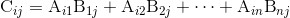

24.5 案例：矩阵计算
回想 22.2.1 节“矩阵乘法”，给定一个 m × n 的矩阵 A 和一个 n × k 的矩阵 B ，可以把它们乘起来得到 m × k 的矩阵 C ，其中 C 的第 i 行第 j 列的元素由下式给出：

如同我们之前所见的，表示一个 m × n 矩阵的“自然的”方法是列表的列表，其中元素 Aij 是第 i 个列表的第 j 个元素。
但大型矩阵有时候是稀疏 的，即大部分的元素等于 0。对于大型稀疏矩阵而言，列表的列表是一种非常浪费的表达方式。一种更简洁的表达方式是元组的列表 (name, i, j, value) ，其中 name 代表矩阵，而 i 、j 、value 表示一个非零元素的位置。
比如，一个十亿 × 十亿的矩阵会有亿亿级别（quintillion，1×1018 ）的元素，这是难以存储在一个计算机中的。但是如果每行当中只有不多的一些非零元素，上面那种替代的表示法就会小很多个数量级。
基于这种表示法，我们可以使用 MapReduce 以分布式的方式执行矩阵乘法。
为使用这种算法，请注意，Aij 只用于计算 C 的第 i 行的元素，Bij 只用于计算 C 的第 j 列的元素。我们的目标是使 reducer 的每一个输出构成矩阵 C 的一个元素。这意味着我们需要用 mapper 发送键值，以确定 C 中的每个元素。建议像下面这样处理：
def matrix_multiply_mapper(m, element):
"""m is the common dimension (columns of A, rows of B)
element is a tuple (matrix_name, i, j, value)"""
name, i, j, value = element
if name == "A":
# A_ij是每个C_ik之和的第j个元素，其中k=1..m
for k in range(m):
# 与C_ik的其他元素分组
yield((i, k), (j, value))
else:
# B_ij是每个C_kj之和的第i个元素
for k in range(m):
# 与C_kj的其他元素分组
yield((k, j), (i, value))
def matrix_multiply_reducer(m, key, indexed_values):
results_by_index = defaultdict(list)
for index, value in indexed_values:
results_by_index[index].append(value)
# 对有两个结果的位置把所有的乘积加起来
sum_product = sum(results[0] * results[1]
for results in results_by_index.values()
if len(results) == 2)
if sum_product != 0.0:
yield (key, sum_product)
比如，如果你有如下的两个矩阵：
A = [[3, 2, 0],
[0, 0, 0]]
B = [[4, -1, 0],
[10, 0, 0],
[0, 0, 0]]
你可以把它们重写为元组：
entries = [("A", 0, 0, 3), ("A", 0, 1, 2),
("B", 0, 0, 4), ("B", 0, 1, -1), ("B", 1, 0, 10)]
mapper = partial(matrix_multiply_mapper, 3)
reducer = partial(matrix_multiply_reducer, 3)
map_reduce(entries, mapper, reducer) # [((0, 1), -3), ((0, 0), 32)]
在这样一个小矩阵上操作并不太有趣，但是如果你有百万行百万列的矩阵，MapReduce 就会起很大作用。